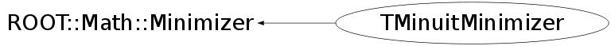

class TMinuitMinimizer: public ROOT::Math::Minimizer
TMinuitMinimizer class implementing the ROOT::Math::Minimizer interface using TMinuit. This class is normally instantiates using the plug-in manager (plug-in with name Minuit or TMinuit) In addition the user can choose the minimizer algorithm: Migrad (the default one), Simplex, or Minimize (combined Migrad + Simplex)
Function Members (Methods)
public:
| TMinuitMinimizer(ROOT::Minuit::EMinimizerType type = ROOT::Minuit::kMigrad, unsigned int ndim = 0) | |
| TMinuitMinimizer(const char* type, unsigned int ndim = 0) | |
| virtual | ~TMinuitMinimizer() |
| static TClass* | Class() |
| virtual void | ROOT::Math::Minimizer::Clear() |
| virtual bool | Contour(unsigned int i, unsigned int j, unsigned int& npoints, double* xi, double* xj) |
| virtual double | ROOT::Math::Minimizer::Correlation(unsigned int i, unsigned int j) const |
| virtual double | CovMatrix(unsigned int i, unsigned int j) const |
| virtual int | CovMatrixStatus() const |
| virtual double | Edm() const |
| double | ROOT::Math::Minimizer::ErrorDef() const |
| virtual const double* | Errors() const |
| virtual bool | GetCovMatrix(double* cov) const |
| virtual bool | GetHessianMatrix(double* h) const |
| virtual bool | GetMinosError(unsigned int i, double& errLow, double& errUp, int = 0) |
| virtual double | GlobalCC(unsigned int) const |
| virtual bool | Hesse() |
| virtual TClass* | IsA() const |
| bool | ROOT::Math::Minimizer::IsValidError() const |
| unsigned int | ROOT::Math::Minimizer::MaxFunctionCalls() const |
| unsigned int | ROOT::Math::Minimizer::MaxIterations() const |
| virtual const double* | MinGradient() const |
| virtual bool | Minimize() |
| virtual double | MinValue() const |
| virtual unsigned int | NCalls() const |
| virtual unsigned int | NDim() const |
| virtual unsigned int | NFree() const |
| virtual ROOT::Math::MinimizerOptions | ROOT::Math::Minimizer::Options() const |
| double | ROOT::Math::Minimizer::Precision() const |
| int | ROOT::Math::Minimizer::PrintLevel() const |
| virtual void | PrintResults() |
| virtual bool | ProvidesError() const |
| virtual bool | Scan(unsigned int i, unsigned int& nstep, double* x, double* y, double xmin = 0, double xmax = 0) |
| void | ROOT::Math::Minimizer::SetDefaultOptions() |
| void | ROOT::Math::Minimizer::SetErrorDef(double up) |
| virtual bool | SetFixedVariable(unsigned int, const string&, double) |
| virtual void | SetFunction(const ROOT::Math::IMultiGenFunction& func) |
| virtual void | SetFunction(const ROOT::Math::IMultiGradFunction& func) |
| virtual bool | SetLimitedVariable(unsigned int ivar, const string& name, double val, double step, double, double) |
| virtual bool | ROOT::Math::Minimizer::SetLowerLimitedVariable(unsigned int ivar, const string& name, double val, double step, double lower) |
| void | ROOT::Math::Minimizer::SetMaxFunctionCalls(unsigned int maxfcn) |
| void | ROOT::Math::Minimizer::SetMaxIterations(unsigned int maxiter) |
| void | ROOT::Math::Minimizer::SetOptions(const ROOT::Math::MinimizerOptions& opt) |
| void | ROOT::Math::Minimizer::SetPrecision(double prec) |
| void | ROOT::Math::Minimizer::SetPrintLevel(int level) |
| void | ROOT::Math::Minimizer::SetStrategy(int strategyLevel) |
| void | ROOT::Math::Minimizer::SetTolerance(double tol) |
| virtual bool | ROOT::Math::Minimizer::SetUpperLimitedVariable(unsigned int ivar, const string& name, double val, double step, double upper) |
| void | ROOT::Math::Minimizer::SetValidError(bool on) |
| virtual bool | SetVariable(unsigned int ivar, const string& name, double val, double step) |
| virtual bool | SetVariableValue(unsigned int, double) |
| virtual bool | ROOT::Math::Minimizer::SetVariableValues(const double* x) |
| virtual void | ShowMembers(TMemberInspector& insp) |
| int | ROOT::Math::Minimizer::Status() const |
| int | ROOT::Math::Minimizer::Strategy() const |
| virtual void | Streamer(TBuffer& b) |
| void | StreamerNVirtual(TBuffer& b) |
| void | SuppressMinuitWarnings(bool nowarn = true) |
| double | ROOT::Math::Minimizer::Tolerance() const |
| static bool | UseStaticMinuit(bool on = true) |
| virtual int | VariableIndex(const string& name) const |
| virtual string | VariableName(unsigned int ivar) const |
| virtual const double* | X() const |
protected:
| void | DoClear() |
| void | DoReleaseFixParameter(int ivar) |
| static void | Fcn(int&, double*, double& f, double*, int) |
| static void | FcnGrad(int&, double* g, double& f, double*, int) |
| void | InitTMinuit(int ndim) |
| void | RetrieveErrorMatrix() |
| void | RetrieveParams() |
private:
| TMinuitMinimizer(const TMinuitMinimizer&) | |
| TMinuitMinimizer& | operator=(const TMinuitMinimizer& rhs) |
Data Members
protected:
| int | ROOT::Math::Minimizer::fDebug | print level |
| unsigned int | ROOT::Math::Minimizer::fMaxCalls | max number of function calls |
| unsigned int | ROOT::Math::Minimizer::fMaxIter | max number or iterations used to find the minimum |
| double | ROOT::Math::Minimizer::fPrec | precision |
| int | ROOT::Math::Minimizer::fStatus | status of minimizer |
| int | ROOT::Math::Minimizer::fStrategy | minimizer strategy |
| double | ROOT::Math::Minimizer::fTol | tolerance (absolute) |
| double | ROOT::Math::Minimizer::fUp | error scale |
| bool | ROOT::Math::Minimizer::fValidError | flag to control if errors have been validated (Hesse has been run in case of Minuit) |
private:
| vector<double> | fCovar | |
| unsigned int | fDim | |
| vector<double> | fErrors | |
| bool | fMinosRun | |
| TMinuit* | fMinuit | |
| vector<double> | fParams | |
| unsigned int | fStrategy | |
| ROOT::Minuit::EMinimizerType | fType | |
| bool | fUsed | |
| static ROOT::Math::IBaseFunctionMultiDim* | fgFunc | |
| static TMinuit* | fgMinuit | |
| static bool | fgUseStaticMinuit | flag to control if using global TMInuit instance (gMinuit) |
| static bool | fgUsed | flag to control if static instance has done minimization |
Class Charts
{kind=link}
{kind=link}
{kind=link}
{kind=link}

Function documentation
TMinuitMinimizer(ROOT::Minuit::EMinimizerType type = ROOT::Minuit::kMigrad, unsigned int ndim = 0)
Constructor for TMinuitMinimier class via an enumeration specifying the minimization algorithm type. Supported types are : kMigrad, kSimplex, kCombined (a combined Migrad + Simplex minimization) and kMigradImproved (a Migrad mininimization folloed by an improved search for global minima). The default type is Migrad (kMigrad).
TMinuitMinimizer(const char* type, unsigned int ndim = 0)
void InitTMinuit(int ndim)
void SetFunction(const ROOT::Math::IMultiGenFunction & func)
Set the objective function to be minimized, by passing a function object implement the basic multi-dim Function interface. In this case the derivatives will be calculated by Minuit Here a TMinuit instance is created since only at this point we know the number of parameters
void SetFunction(const ROOT::Math::IMultiGradFunction & func)
Set the objective function to be minimized, by passing a function object implement the multi-dim gradient Function interface. In this case the function derivatives are provided by the user via this interface and there not calculated by Minuit.
void Fcn(int& , double* , double& f, double* , int )
void FcnGrad(int& , double* g, double& f, double* , int )
bool SetVariable(unsigned int ivar, const string& name, double val, double step)
set a free variable.
bool SetLimitedVariable(unsigned int ivar, const string& name, double val, double step, double , double )
set a limited variable.
bool SetVariableValue(unsigned int , double )
set the value of an existing variable parameter must exist or return false
bool Minimize()
perform the minimization using the algorithm chosen previously by the user By default Migrad is used. Return true if the found minimum is valid and update internal chached values of minimum values, errors and covariance matrix. Status of minimizer is set to: migradResult + 10*minosResult + 100*hesseResult + 1000*improveResult
void RetrieveErrorMatrix()
get covariance error matrix from TMinuit when some parameters are fixed filled the corresponding rows and column with zero's
bool GetHessianMatrix(double* h) const
get Hessian - inverse of covariance matrix just invert it but need to get the compact form to avoid the zero for the fixed parameters
int CovMatrixStatus() const
return status of covariance matrix
status: 0= not calculated at all
1= approximation only, not accurate
2= full matrix, but forced positive-definite
3= full accurate covariance matrix
bool GetMinosError(unsigned int i, double& errLow, double& errUp, int = 0)
Perform Minos analysis for the given parameter i
void DoReleaseFixParameter(int ivar)
check if a parameter is defined and in case it was fixed released TMinuit is not able to release free parameters by redefining them so we need to force the release
bool Contour(unsigned int i, unsigned int j, unsigned int& npoints, double* xi, double* xj)
contour plot for parameter i and j need a valid FunctionMinimum otherwise exits
bool Scan(unsigned int i, unsigned int& nstep, double* x, double* y, double xmin = 0, double xmax = 0)
scan a parameter (variable) around the minimum value the parameters must have been set before if xmin=0 && xmax == 0 by default scan around 2 sigma of the error if the errors are also zero then scan from min and max of parameter range (if parameters are limited Minuit scan from min and max instead of 2 sigma by default) (force in that case to use errors)
unsigned int NDim() const
this is <= Function().NDim() which is the total number of variables (free+ constrained ones)
{ return fDim; }double CovMatrix(unsigned int i, unsigned int j) const
return covariance matrices elements
if the variable is fixed the matrix is zero
The ordering of the variables is the same as in errors